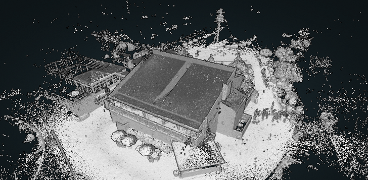
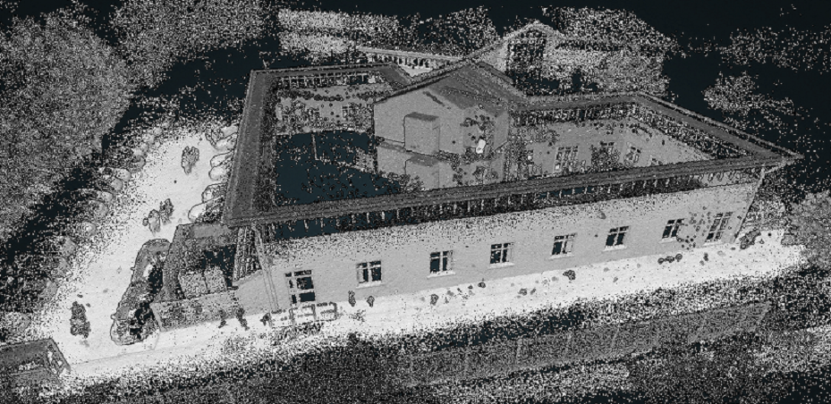
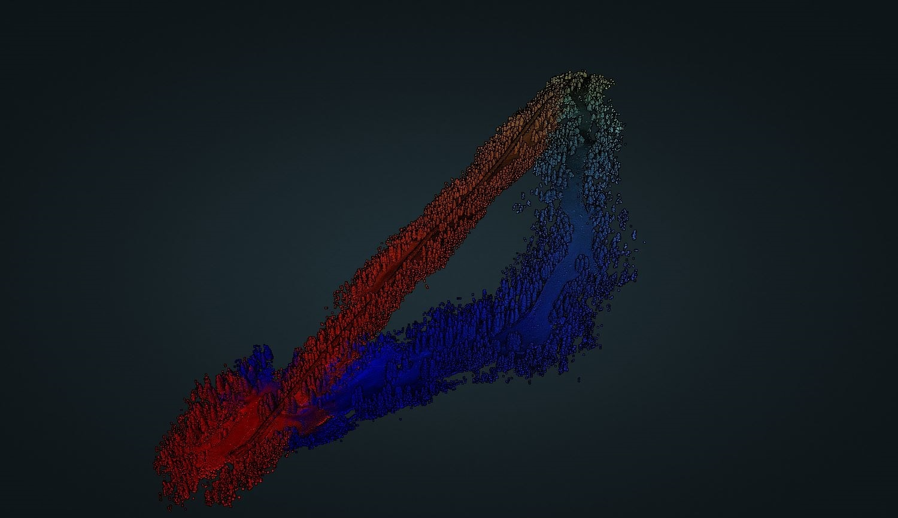
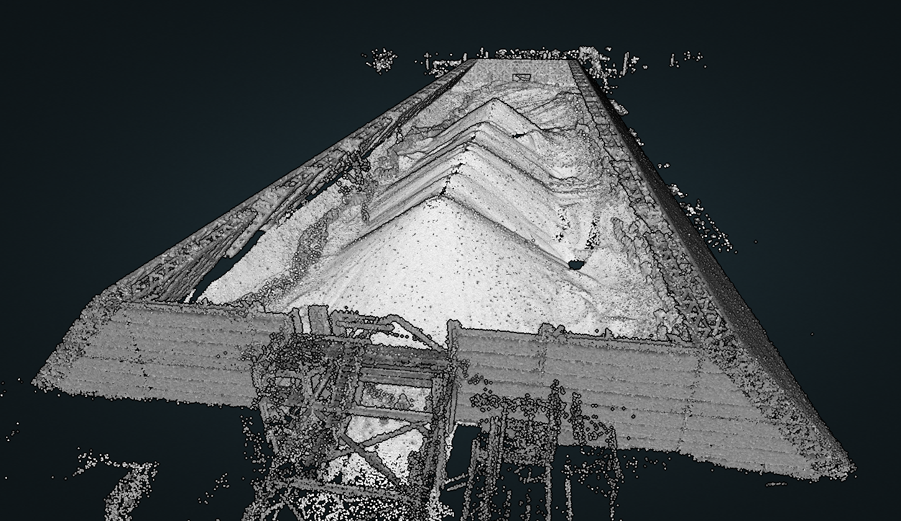
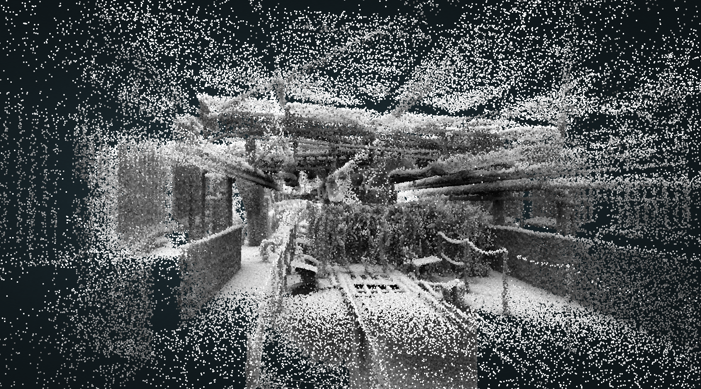
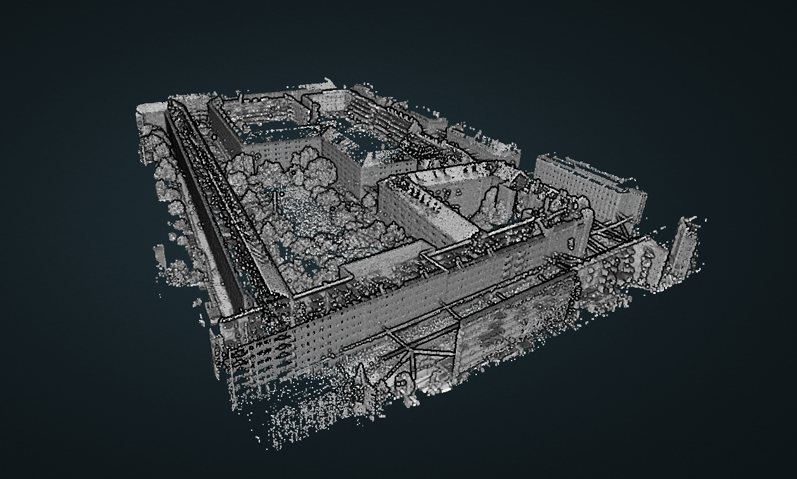

Home
About Us
Projects
Tutorials
How to reach us
Our
Work
Check out some of our projects...

Project: Factory A (Scan Time: 9' min)

Project: GeoSLAM Ltd. (Scan Time: 15' min)
Project: Workshop (Scan Time: 3' min)
Project: Office A (Scan Time: 4' min)
Project: Building A (Scan Time: 16' min)

Project: Farm (Scan Time: 12' min)
Project: Forest (Scan Time: 23' min)

Project: Stockpile (Scan Time: 17' min)

Project: Factory B (Scan Time: 5' min)
Project: Office B (Scan Time: 7' min)
Project: Building B (Scan Time: 14' min)
Project: Stadium (Scan Time: 30' min)
Project: Building Block A (Scan Time: 28' min)
Project: Harbor (Scan Time: 25' min)

Project: Farm UAV (Scan Time: 7' min)
Project: Urban BB (Scan Time: 18' min)